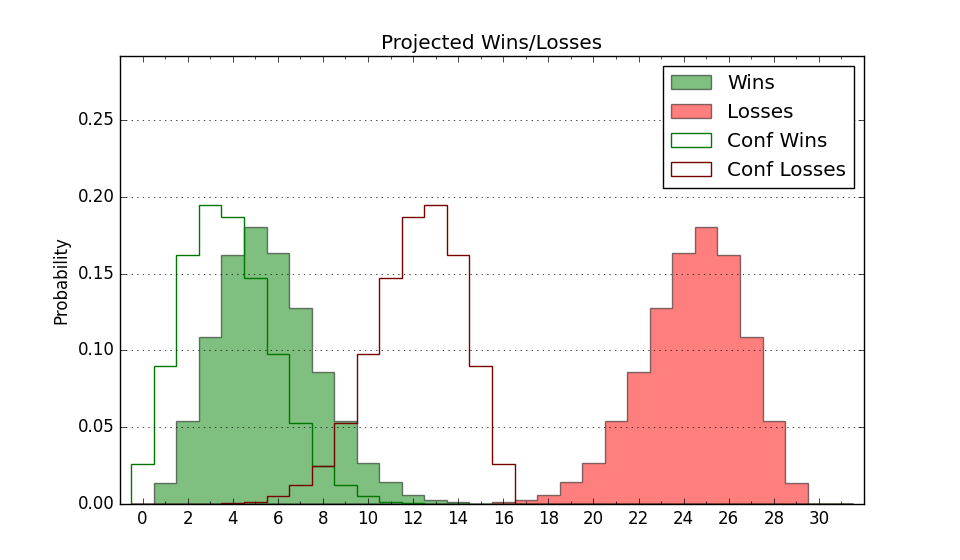

| Home | Game Probabilities | Conferences | Preseason Predictions | Odds Charts | NCAA Tournament |
| City: | Conway, Arkansas | |
| Conference: | Atlantic Sun (1st)
| |
| Record: | 0-0 (Conf) 1-9 (Overall) | |
| Ratings: | Comp.: -19.4 (347th) Net: -21.3 (341st) Off: 94.3 (304th) Def: 115.6 (345th) SoR: 0.0 (251st) |
| Remaining | ||||||
|---|---|---|---|---|---|---|
| Date | Opponent | Win Prob | Pred. | |||
| 12/10 | @ Eastern Illinois (325) | 27.5% | L 66-73 | |||
| 12/20 | Western Illinois (281) | 44.3% | L 70-71 | |||
| 12/28 | @ Oklahoma (20) | 0.9% | L 57-89 | |||
| 12/30 | @ Missouri (79) | 2.9% | L 60-85 | |||
| 1/6 | @ North Alabama (225) | 11.2% | L 67-82 | |||
| 1/11 | Eastern Kentucky (208) | 27.8% | L 70-77 | |||
| 1/13 | Bellarmine (248) | 34.0% | L 68-72 | |||
| 1/18 | @ Lipscomb (141) | 5.9% | L 66-86 | |||
| 1/20 | @ Austin Peay (275) | 17.3% | L 61-72 | |||
| 1/24 | @ Queens (259) | 15.1% | L 71-84 | |||
| 1/27 | Kennesaw St. (229) | 30.6% | L 77-83 | |||
| 2/1 | Florida Gulf Coast (251) | 34.7% | L 70-75 | |||
| 2/3 | Stetson (243) | 32.9% | L 72-77 | |||
| 2/8 | @ Jacksonville (284) | 19.4% | L 67-77 | |||
| 2/10 | @ North Florida (301) | 21.9% | L 71-80 | |||
| 2/15 | Austin Peay (275) | 41.5% | L 65-68 | |||
| 2/17 | Lipscomb (141) | 17.5% | L 70-82 | |||
| 2/22 | @ Bellarmine (248) | 13.1% | L 64-77 | |||
| 2/24 | @ Eastern Kentucky (208) | 10.1% | L 66-82 | |||
| 3/1 | North Alabama (225) | 30.1% | L 71-77 | |||
| Previous | Game Score | |||||
| Date | Opponent | Win Prob | Result | Off | Def | Net |
| 11/6 | @Tulsa (174) | 8.3% | L 53-70 | -10.6 | 13.6 | 3.0 |
| 11/13 | Arkansas Pine Bluff (324) | 55.9% | L 83-85 | -4.5 | -4.7 | -9.2 |
| 11/17 | @Vanderbilt (216) | 10.6% | L 71-75 | 8.1 | 14.5 | 22.6 |
| 11/20 | @Southeast Missouri St. (340) | 33.1% | L 68-70 | 0.4 | 6.1 | 6.5 |
| 11/22 | @Kansas St. (63) | 2.3% | L 56-100 | -7.8 | -10.9 | -18.7 |
| 11/25 | Eastern Michigan (310) | 51.8% | L 71-74 | -7.3 | -12.1 | -19.4 |
| 11/26 | New Orleans (294) | 47.2% | L 74-79 | -5.7 | -1.7 | -7.3 |
| 11/29 | @Loyola Marymount (120) | 4.8% | L 63-90 | -5.8 | -4.4 | -10.1 |
| 12/3 | @Hawaii (132) | 5.5% | L 76-95 | 26.9 | -25.1 | 1.8 |
| 12/7 | Little Rock (242) | 32.7% | W 75-71 | 4.2 | 12.7 | 16.9 |
| Stats & Trends | |||||
|---|---|---|---|---|---|
| Current | Day | Week | Month | Season | |
| Composite | -19.4 | +0.6 | +2.2 | -5.3 | -5.1 |
| Comp Rank | 347 | +2 | +6 | -26 | -24 |
| Net Efficiency | -21.3 | +0.8 | +4.5 | -11.8 | -- |
| Net Rank | 341 | +4 | +10 | -145 | -- |
| Off Efficiency | 94.3 | +0.2 | +4.1 | +5.7 | -- |
| Off Rank | 304 | +2 | +32 | -60 | -- |
| Def Efficiency | 115.6 | +0.7 | +0.4 | -17.5 | -- |
| Def Rank | 345 | +3 | -2 | -234 | -- |
| SoS Rank | 274 | -2 | -11 | -146 | -- |
| Exp. Wins | 5.6 | +0.1 | +1.3 | -3.3 | -3.5 |
| Exp. Conf Wins | 3.8 | +0.1 | +0.6 | -1.0 | -1.0 |
| Conf Champ Prob | 0.1 | +0.0 | +0.1 | -0.6 | -0.6 |

| Advanced Stats | ||
|---|---|---|
| Stat | Value | Rank |
| Off Eff FG % | 0.446 | 320 |
| Off Ast Ratio | 0.141 | 164 |
| Off ORB% | 0.274 | 189 |
| Off TO Rate | 0.160 | 239 |
| Off FT Ratio | 0.263 | 316 |
| Def Eff FG % | 0.549 | 322 |
| Def Ast Ratio | 0.156 | 281 |
| Def ORB% | 0.367 | 353 |
| Def TO Rate | 0.138 | 256 |
| Def FT Ratio | 0.333 | 180 |